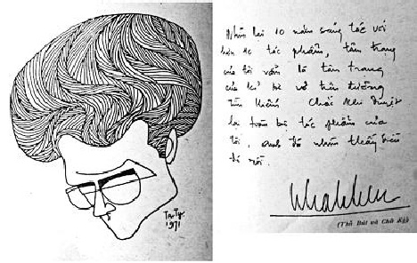

Tên: Bùi Nhật Tiến. Bút hiệu: Nhật Tiến. Sinh ngày: 24-08-1936 tại Hà Nội. Viết văn từ năm 1957.

Nhật Tiến và thủ bút.
Tác phẩm:
1. Những người áo trắng, Huyền Trân xuất bản, 1959
2. Những vì sao lạc, Phượng Giang xuất bản, 1960
3. Thềm hoang (Giải Văn chương Toàn quốc), Đời Nay xuất bản, 1961
4. Mây hoàng hôn, Phượng Giang xuất bản, 1962
5. Người kéo màn, Huyền Trân xuất bản, 1962
6. Ánh sáng công viên, Phượng Giang xuất bản, 1963
7. Chuyện bé Phượng, Đông Phương xuất bản, 1964
8. Vách đá cheo leo, Đông Phương xuất bản, 1965
9. Chim hót trong lồng, Đông Phương xuất bản, 1966
10. Giấc ngủ chập chờn, Đông Phương xuất bản, 1967
11. Giọt lệ đen, Huyền Trân xuất bản, 1968
12. Quê nhà yêu dấu, Huyền Trân xuất bản, 1970
13. Lá chúc thư, Huyền Trân xuất bản, 1970
14. Tay ngọc, Huyền Trân xuất bản, 1971
Đã cộng tác với: Văn Hoá Ngày Nay, Tân Phong, Bách Khoa, Văn Học, Đông Phương…
Chủ biên Cơ sở Xuất bản Huyền Trân
Nhật Tiến và khung trời mơ ước
Nhật Tiến đi vào văn chương bằng tình thương, một tình thương nảy sinh trong tấm lòng đôn hậu. Tuổi trẻ mà Nhật Tiến đem vào văn chương, xuyên qua thân phận mình, không phải tuổi trẻ của giận dữ và phẫn nộ. Biết rằng, dù muốn dù không, cũng phải chấp nhận cuộc đời đã có đấy. Nó là vui, buồn, yêu, ghét. Nó là cánh mây bay lang thang trên vòm trời cao cả kia, hay đống rác thối tha nhung nhúc ruồi bọ này. Vì ý thức được như vậy nên Nhật Tiến không đi tìm cuộc đời qua kẻ khác, mà tìm ngay ở bản thân, trong đáy thẳm tâm linh, ở đấy, tiếng nói chân thành thì thầm cất lên từng âm thanh nấn nuối nó với vô vàn thương mến và chua xót!
Phương pháp hành văn của Nhật Tiến thật dung dị, thoải mái ngay cả những khi cần phải đưa câu chuyện vào mức độ cao nhất của kỹ thuật dựng truyện. Nhật Tiến, nhà văn tình cảm thiên về xã hội. Tất cả những dữ kiện do cuộc sống đẩy tới, tác động vào tâm thức nhà văn đều được Nhật Tiến điều hợp cho cân xứng ở mỗi lời nói, hay mỗi động tác để trở nên có hiệu năng truyền cảm.
Với 10 năm trong nghề, và 14 tác phẩm (tính đến tháng 5-1971), đã chứng minh đầy đủ ý chí và tài năng của một nhà văn đã quyết dấn thân vào nghiệp. Trong số 14 tác phẩm, đã có 3 cuốn: Thềm hoang, Người kéo màn và Tay ngọc tái bản tới 3 lần.
Nhật Tiến rất thận trọng trong vấn đề sáng tác vì luôn luôn tin rằng, danh tiếng của nhà văn không thể và không bao giờ được cấu tạo bằng sự giả trá. Nó cần được chọn lựa và đánh giá đúng mức qua thời gian, qua nhiều chặng thử thách bắt buộc mỗi người cầm bút phải vượt qua.
Nhật Tiến quả tình đã vượt qua nhiều thử thách, mỗi một thử thách dù thành công hay thất bại, đều giúp cho nhà văn những kinh nghiệm. Người ta cho rằng, con đường văn nghiệp của Nhật Tiến là cuộc sống bằng phẳng đồng thời cũng là sự tiếp nối của nền văn học tiền chiến. Có người nghĩ, Nhật Tiến đã dùng văn chương như một hình thức điểm trang cuộc đời, ở đấy, nó không nói lên cái khí phách, cái can đảm mà tuổi trẻ cần có. Cả hai thành kiến trên đều có phần ngộ nhận. Như hầu hết các nhà văn ở lứa tuổi trên dưới 30, Nhật Tiến cũng lớn lên trong chiến tranh, cũng đã được chứng kiến những cơn biến động lịch sử, ở đó, mỗi bài học đều được tuổi trẻ mua bằng máu lệ, mua bằng uất hận, đau thương! Chỉ có khác, cái nhìn, cái biết và cái sống không nằm chung ước lệ ở mỗi tâm tư, nên sự nói ra hay tỏ bày đều được hình thành theo cảm quan riêng biệt.
Tác phẩm đầu tay: Những người áo trắng (1959), với nội dung viết về đời sống của những cô gái mồ côi ở trong khuôn viên cô nhi viện. Tất cả nỗi u uẩn, thầm kín thuộc những linh hồn bơ vơ mà Chúa cũng không đủ quyền năng để ngăn cản hay cứu rỗi cho mỗi số phận! Những dòng nước mắt tủi hờn thấm vào lòng người, tạo nên nhức nhối:
… Bởi vì mỗi đứa chúng tôi có một cuộc sống riêng biệt. Cuộc sống chỉ sống trong những đêm trằn trọc, thao thức, xót xa đầy nước mắt.
Chúng tôi không phủ nhận công lao của các bà phước, của các nhà hảo tâm, của các cơ quan từ thiện. Nhưng tình nhân loại của các người đó mới chỉ an ủi được chúng tôi một phần nào sự đau khổ về vật chất, thiếu cơm, thiếu áo, trong quãng đời côi cút của chúng tôi.
Còn linh hồn chúng tôi, những linh hồn lạc lõng thiếu tình thương của cha mẹ, tình yêu của những con người đến tuổi dậy thì và thiếu cả cái ước vọng vô bờ của tuổi hoa niên, hỏi bàn tay nào xoa dịu được?
Cho nên tâm hồn chúng tôi là những tâm hồn khao khát sự thương yêu, hằn học với thực tại, để chỉ quay về vò xé lòng mình trong những đêm dài mất ngủ…
Đoạn văn trên, trích trong trang đầu cuốn sách, nó là lời nói chân thành của một cô nhi mang tên Quỳnh, nhân vật xưng "tôi" trong tác phẩm, viết thay lời vào truyện.
Người đọc chỉ cần suy luận qua những dòng chữ ai oán ấy, có thể hình dung thấy biết bao nhiêu tủi hờn đang vò xé những tâm hồn lạc loài, vì hoàn cảnh chung, phải chịu đựng lẫn nhau trong nhiều trạng huống khốn khó. Họ là những bé gái mồ côi được nhặt về từ mọi nơi, hoặc do chiến tranh, hoặc vì xã hội. Họ đến đây, ở đây, từ lúc còn măng sữa, rồi lớn lên trong vòng đai của Chúa, do các bà phước đại diện. Ngoài phần giáo lý họ cũng được giáo dục về học vấn như ở ngoài đời nhưng họ vẫn không thuộc hẳn về xã hội, với đầy đủ quyền hành của con người thế gian, để có thể vui buồn theo ý muốn. Ở đây, họ đã hiến dâng linh hồn cho Chúa vì miếng cơm, manh áo, vì hơi thở mà bố mẹ họ bởi không may nào đó, đã không cho họ có được. Do vậy, khi đã đến tuổi trưởng thành với những thắc mắc về thân phận, nhất là tình yêu phát hiện trong lòng tuổi dậy thì với nhớ thương hình bóng người yêu để sưởi ấm tình đời. Bởi thế, có người trốn đi vì không chịu nổi cô đơn, có cả các xác chết nữa, với từng cơn buồn dằng dặc! …
Nhưng rồi thời gian mòn mỏi trôi đi. những cô gái đã qua tuổi mơ mộng. Tình cảm đã khô cong và cuộc đời được hình dung như một chịu đựng ngày này qua ngày khác, gần như vô nghĩa. Lúc đó, chỉ còn tình thương và bổn phận. Rồi cứ thế, lần lượt và lần lượt:
… Trời về cuối đông, mây u ám phủ nặng trĩu cả bầu trời. Gió bên ngoài thổi nghiêng ngả, những cành cây trụi lá. Qua khung cửa kính chỗ tôi ngồi, ngoài kia là khung cảnh tiêu điều của một buổi chiều sắp tắt. Trời sâm sẩm tối, con đường nhựa xanh láng mướt dẫn đến vườn hoa hôm nay ngập nhiều lá vàng. Tôi chắc vườn hoa ngoài ấy bây giờ cũng xơ xác lá và vắng lặng bóng người. Tôi hình dung đến ngày xưa ở đấy.
Hình ảnh bé Phượng ngày nào khóc gọi chị Loan và mẹ bên phòng bà Nhân, hình ảnh con Dung bị người ta xin mất con Nguyệt, rồi câu chuyện của Liễu bỏ ra đi tìm một tình yêu lãng mạn, cái chết của Hoà, cái chết của con người phu hồ, những mồ cỏ xanh um ngoài nghĩa địa, mối tình tuyệt vọng của tôi.
Những ngày ấy quá xa rồi, vì bây giờ tôi không còn là một thiếu nữ khao khát yêu đương. Tôi già hơn trước nhiều và lý tưởng tôi là bổn phận…
Quỳnh
Cuốn sách Những người áo trắng được khép bằng hai trang thư, với một nỗi niềm vừa bâng khuâng như kẻ lữ hành đi vào vùng trời tuyệt vọng! Tâm hồn Nhật Tiến chứa nghẹn tình thương, thứ tình thương cao trọng, ở đó, lòng thù hận và nỗi bi thiết hình như được che khuất bởi những ước mơ tràn ngập ánh sáng của sự cứu rỗi thiêng liêng nào đó.
Khởi hành từ đấy, Nhật Tiến đi sâu vào thung lũng của tâm tư để tìm về cho riêng mình một tình thương khác qua tác phẩm Những vì sao lạc. Hình ảnh những đứa trẻ không may chẳng phải chỉ được nói đến, hay chỉ xảy ra trong vòng đai cô nhi viện mà nó còn hiện diện ngay ở giữa xã hội, dưới mái gia đình, trong những hoàn cảnh vô cùng ray rứt. Kỹ thuật dựng truyện của cuốn Những vì sao lạc (1960) đi chung một đường với Những người áo trắng, thay vì trang thư, cuốn sách được mở đầu bằng những trang bút ký của Khánh. Cái phương cách mở đầu này làm hại không ít cho tác phẩm. Đọc nó, người ta coi như đã đọc xong nội dung cuốn sách. Sự bất ngờ sảng khoái do người đọc khám phá ra trong tác phẩm không còn nữa. Sự tiếp nối của những trang sau chỉ là để giải thích hoặc biện minh cho một dữ kiện nào đó, được sắp đặt trước trong tâm thức nhà văn. Văn chương không phải như vậy. Nó không cần biện minh gì ngoài nó.
Nhưng chẳng phải vì thế, cuốn Những vì sao lạc không có giá trị về phương diện truyền cảm. Nhật Tiến đã dùng tài năng riêng để đưa người đọc vào một vùng trời mà sự trong trắng của tuổi thơ chỉ còn là giận hờn, oán trách! Những tội lỗi do tuổi trẻ gây ra đều từ bên ngoài tác động. Hoàn cảnh gia đình và chính người lớn đã dồn chúng vào ngõ cụt. Biết bao nhiêu dòng chữ, nhân danh tình thương để nói lên sự thực, may mắn thay, mọi đau đớn, tan vỡ đến cuối cùng được nhà văn hàn gắn lại mở lối thoát cho những kiếp người…
… Cuộc sống của tôi êm đềm như thế cho đến năm tôi mười hai tuổi. Tôi không muốn nhắc ra đây hình ảnh đổ vỡ của một thời gian hãi hùng khi loạn lạc. Chẳng phải một mình tôi chịu số phận như thế này, mà trong những ngày đen tối đã còn biết bao nhiêu đứa trẻ có cùng một hoàn cảnh như tôi, hoàn cảnh của những đứa con mất mẹ trong khói lửa ngùn ngụt ở khắp phương trời…
(Những vì sao lạc)
Đoạn văn đã nói rõ tất cả, nó là nguyên cớ chính để nhà văn xếp đặt những sự tình xung quanh một vấn đề đã quyết định.
Nội dung hai tác phẩm trên, Nhật Tiến vô tình đi gần với Dickens, văn hào Anh ở thế kỷ XIX. Dickens cũng vì những đứa trẻ không may mắn mà tranh đấu. Ông là nhà văn hiện thực xã hội, chuyên dùng ngòi bút để chống đối những kẻ đạo đức giả và ích kỷ, đốn hèn. Hình ảnh David Copperfield dưới nét mực tuyệt luân của Dickens, không thiếu gì trong xã hội Việt Nam hiện tại, nhân vật Khánh hay Quỳnh đã chứng minh, tuy rằng, sự so sánh chỉ như một thí dụ. Vấn đề làm khổ tâm Nhật Tiến nhất, vẫn là sự hiện hữu của một cuộc sống chẳng mấy tốt đẹp cho mỗi số phận, trong một xã hội còn nhiều cách biệt. Cuộc sống đó, không được thăng hoa liên tục trong sự mong mỏi của mỗi kiếp người. Nó cũng không được hình dung qua những khuôn mặt ra vào nơi trà đình tửu quán của một hạng người may mắn do số mệnh an bài. Cái cuộc sống mà Nhật Tiến cảm thấy gần gũi với mình, nó như hơi thở, như nỗi buồn, do đấy mình có trách nhiệm. Chính vì trách nhiệm và lương tâm nhà văn, nên Nhật Tiến đã tự dấn thân vào một cảnh huống vô cùng bi đát của những kiếp người vì không nhìn rõ ý nghĩa đời sống, nên vẫn sinh hoạt một cách vô tư và an phận, bên cạnh một đời sống khác tốt đẹp hơn hoàn cảnh của họ nhiều.
Đứng trên bình diện kỹ thuật, việc hình thành một tác phẩm, đòi hỏi nhà văn ngoài lòng trắc ẩn, phải có sự nhận định vô tư, sáng suốt về mọi khía cạnh của vấn đề được đặt ra. Cuộc sống với những cảnh ngộ chẳng mấy khích lệ, thường được soi qua tấm lăng kính bi thảm, đôi khi bị chi phối bởi những ước vọng thầm kín sâu xa nào khác, nên có thể vì đó, tác phẩm mất phần hiệu năng đích thực của nó. Nhưng đó không phải trường hợp Nhật Tiến với Thềm hoang.
Trong tác phẩm Thềm hoang (1961), nhà văn đã chiếu rọi vào những kiếp người có mặt giữa vòng đai xóm Cỏ, một xóm lao động nằm ngay trong lòng thành phố, để tìm về cho mình một ý hướng sáng tạo. Mọi sinh hoạt ở đây tuân theo quy luật riêng, nghĩa là mỗi con người đều có quyền hành và trách nhiệm độc lập. Sự liên hệ giữa người thân thuộc như bố mẹ, vợ chồng, con cái nhiều lúc cũng xem như thấy-có-đó, chứ không được nối kết bởi mối dây thân ái, tình ruột thịt cùng chung cảnh ngộ không may:
Ai đưa tôi đến chốn này
Ban đêm thì tối ban ngày thì đen
Ôm đàn gẩy khúc huyên thuyên
Nghêu ngao mấy điệu cho quên tháng ngày…
Bốn câu trên, Nhật Tiến đưa vào trang đầu của cuốn Thềm hoang nhằm mục đích mở cho người đọc hé nhìn thấy, bối cảnh ngột ngạt của một cảnh tượng đang quay cuồng, chen chúc và xô đẩy nhau đi vào bi trường kịch xã hội.
Những khuôn mặt: bác Tốn, tay nghệ sĩ mù kiếm ăn bằng nghề hát dạo. Thằng Ích, mồ côi cha, khôn trước tuổi. Dượng Tám, tên lưu manh sống bám vào vợ con. U Tám, người con gái không may goá bụa nửa chừng xuân, mê lời tán dóc và thân thể cường tráng của gã đàn ông để rồi đau khổ, sau cùng kết liễu đời mình bằng sợi dây oan nghiệt! Ông Phó Ngữ goá vợ, có đứa con gái duy nhất, muốn nó có tấm chồng tử tế mà không xong. Khuôn mặt vợ lão Hói, tên bói bài tây, rượu chè be bét, lúc nào cũng tin có ông Trời, cùng nỗi thê thảm của Năm Trà với khuôn mặt Huệ, cô gái điếm đã hết thời xuân sắc mà vẫn gây sóng gió trong lòng bác Tốn, qua trí tưởng tượng. Ngần ấy thân phận xô đẩy nhau, lôi cuốn nhau, hoà trộn vào nhau để cấu tạo nên một cảnh huống vừa thương phẫn vừa bi thảm.
Trong Thềm hoang, Nhật Tiến đã viết, đã suy nghĩ rất nhiều về hoàn cảnh tâm lý của mỗi nhân vật. Nhật Tiến có một nhận xét rất tinh tế và tinh vi về từng trạng thái đã xô đẩy mỗi thân phận vào vị trí đau đớn của họ. Phương pháp hành văn gọn và mạnh nên gây xúc động thật tình qua sự khóc cười rất hồn nhiên mà cũng vô cùng bi thiết của mỗi vai trò, mỗi trường hợp, trong gần 300 trang sách. Hình ảnh bác Tốn, thằng Ích như được an bài do định mệnh. Hai vóc dáng ấy hiện diện từ trang đầu đến trang cuối, chỉ để nói tới sự liên hệ về quyền lợi của lớp người đã mất tương lai! Hai thân phận như hai chứng tích, in hằn vào tâm tưởng người đọc từng nỗi giày vò chua chát. Sinh ra ở đời, mỗi số phận đều cố tìm cách vượt mình, vượt thoát hiện tại, nhưng ông trời kia, ông trời, cách đây gần một thế kỷ, Nietzsche – triết gia Đức – đã gào to: Thượng Đế chết rồi! … nhưng sự thực, đối với con người phương Đông, mỗi thân phận ít nhiều gì, vẫn còn tin tưởng có ông Trời, ông Phật hay Chúa để bám víu vào, cầu xin và an ủi mỗi lần gặp không may. Bởi vậy, khi Nhật Tiến dựng Thềm hoang với các nhân vật nói trên và những sự tình xảy ra đều ẩn giấu bên trong sự an bài của một vị Trời nào đấy!
Hai bóng người hay hai bóng ma, cứ dật dờ mỗi đêm lang thang trên những lối mòn quen thuộc để bàn cãi vớ vẩn về một hoàn cảnh không thuộc về mình:
… Những lần hai bác cháu dẫn nhau đi qua ánh đèn đỏ gay gắt của các tiệm nhảy trên phố, có tiếng kèn xoáy vào không khí tĩnh mịch ban đêm, tiếng cốc tách va vào nhau lách cách, bác Tốn thường lắc vai nó:
"Nhảy đầm khoái chứ nhỉ?"
Ích đáp có vẻ thành thạo:
"Khoái đứt đuôi đi ấy chứ lị!"
"Dơ bỏ bố đi".
"Dơ mà lại khoái!"
"Khoái nhưng dơ!…"
(Thềm hoang, trang 14)
Lời đối thoại thật nhấm nhẳn, nhưng hồn nhiên trong việc tỏ bày những gì mình cảm thấy chứ không do suy nghĩ.
Từ nhảy đầm hai bác cháu đi sang vấn đề ăn uống. Thằng Ích chỉ thích bánh ga-tô, còn bác Tốn khoái phở, nhưng tuy khoái mà không dám ăn, vì giá một tô phở gần bằng cả buổi đi lang thang hát khô cổ, gảy đàn muốn rụng tay mới có được. Sự hợp tác giữa bác Tốn và thằng Ích được ấn định rõ ràng bằng cách chia đôi số tiền kiếm được mỗi buổi. Thằng Ích có công dẫn đường, bác Tốn có công trình diễn. Số tiền thằng Ích được chia, nó giấu đi một ít để ăn quà và mua đồ tặng con Ngoan – em gái nó – một phần, đưa cho mẹ để thêm vào ngân quỹ gia đình. Còn bác Tốn cố dè xẻn, dành tiền lấy Huệ, cô gái điếm loại rẻ tiền đã hết thời nhan sắc. Nhưng bác Tốn vẫn mê nàng qua lời tả của thằng Ích: Cô Huệ đẹp và thơm lắm, cô đánh môi son, mặc áo hồng, bận quần trắng. Bác Tốn mù nên chỉ "nhìn" người mình yêu qua trí tưởng tượng với ước mơ đắm đuối! Còn Huệ, cô gái giang hồ tuy đã hết thời, lại đau ốm luôn vì ham bán đắt rẻ thể xác mong đủ miếng ăn. Mỗi đêm hành nghề xong, lúc trở về xóm có ai nói xa xôi: "Mệt không cô Huệ ơi!" nàng lại chanh chua giận dữ: "Mệt cái phải gió. Cha tổ bố, ít tiền mà cứ muốn đẹp!" Không khí sống của xóm Cỏ, xóm điển hình cho những khu cặn bã của xã hội với những sinh hoạt cực kỳ sôi nổi. Những trận đòn chí tử của anh chồng say tặng vợ, với tiếng khóc, câu cười cùng lời nói thô tục được Nhật Tiến ghi chép tận tường để trình bày thực trạng. Ngay cả tình thương yêu trong trắng của hai anh em thằng Ích cũng được diễn tả bằng những dòng chữ nhạt nhoà nước mắt:
… Chúng nó (Ích và Ngoan) nghĩ đến ngày mai ngày kia và mãi mãi, buổi sáng phải đi mót củi khô và lá rụng ở mặt đường, buổi trưa nắng gắt, đi quẩy nước ở ngoài giếng, chiều tối, dượng Tám uống rượu lảo đảo trở về, chửi lảm nhảm tới khuya. Mỗi cử động mạnh của dượng, ngay lúc dượng chẳng đánh ai cả, cũng đủ làm cho tim Ích đập nhanh trong lồng ngực. Ích nghĩ dượng Tám thật tráo trở. Dượng vui đấy, mà giở mặt ngay đấy. Nhiều khi Ích có ý muốn mình được cầm một con dao nhọn hoắt mà đâm mạnh vào tim dượng. Máu đỏ phun ra sẽ làm nó rất kinh sợ nhưng cũng hả hê biết mấy…
… Cũng có lúc Ích ước ao mình được dẫn em bỏ trốn nhà ra đi. Điều ấy lại còn khó khăn hơn là sự cầm dao giết dượng Tám. Vì trong thành phố ồn ào này, tuy rộng rãi thật, nhưng nó chẳng biết là mình sẽ đi về đâu…
(Thềm hoang, trang 27)
Sự hình thành của một nếp sống không phải ngẫu nhiên mà có, đích thực nó phải trải qua nhiều giai đoạn. Ở mỗi giai đoạn lại tích luỹ thêm những bằng chứng, xác định rõ từng sự kiện đã xâm nhập vào trong tâm hồn của con người, để tạo nên nếp sống đó.
Nó còn có thể là một không gian địa ngục, được mô tả như hoàn cảnh đương nhiên, vây lút và cuốn tròn mỗi số phận không cho vượt thoát:
… Ở đường cái rẽ vào là ngay đầu xóm Cỏ. Có những mái lá nứt rạn chia ra lối hẹp. Vào những ngày mưa, lòng xóm hoá ra lòng cống, khi nước rút đi thì ngập bùn và rác rưởi. Mùi tanh nồng theo gió thoang thoảng bay đi. Mỗi lần đêm về, lối ngõ tối hun hút như một cái miệng có chiều sâu… Một vài ngọn đèn dầu đỏ đòng đọc lùa ánh sáng qua kẽ vách không soi hết những mô đá khấp khểnh nhô lên giữa những vũng bùn đen quánh. Ở đây về đêm có từng bóng áo trắng thấp thoáng sau mấy cái thùng xe đậu rải rác. Khách tìm hoa chụm đầu vào nhau thì thào. Que diêm bật lên rồi tắt ngúm. Ánh sáng teo lại theo tàn than rồi bóng tối lại tiếp tục bưng lấy tội lỗi một cách hối hả, vội vàng…
(Thềm hoang, trang 29)
Đấy, cái môi trường sinh động của một lớp người được phác hoạ trong tâm trí, để rồi các hoạt cảnh lần lượt trình bày thật linh động theo ý muốn nhà văn, những con người chui rúc nơi đây, không phải hoàn toàn mất hết nhân tính. Nhưng cái nhân tính chỉ được Nhật Tiến ghi nhận bằng những nét mờ nhạt qua nhân vật bà Chín và một vài động tác si mê của bác Tốn với Huệ trong lúc nàng ốm đau. Có nhiều lúc, bác Tốn muốn nói với Huệ một câu, một câu thôi, nhưng vì mặc cảm tự ti nên bác tự nhủ: Xấu hổ bỏ bố đi!… Câu nói phơi bày cái tâm trạng đau xót của một kẻ đã tật nguyền mà lòng còn phơi phới tình xuân. Sở dĩ bác Tốn – nghệ sĩ mù – còn sống được ở cái xóm Cỏ này, chẳng phải chỉ có Huệ, còn thằng Ích và bao nhiêu người cùng cảnh ngộ, cũng nghèo như bác, cũng lam lũ như bác, nên khi vui bác thường cất cao giọng:
"Cô Huệ ơi!
Tôi theo cô đến tận góc bể chân trời
Sông sâu tôi cũng lội, núi đồi tôi cũng leo
Sang Tây, sang Nhật, sang Lào
Sang Tàu, sang Mỹ tôi theo đến cùng…
Ới! Cô Huệ ơi! …"
Đau đớn thay mối tình bác Tốn mơ tưởng, nó chỉ là mối tình suông, mối tình tuyệt vọng vì tuy nhan sắc Huệ đã xuống, nhưng chắc chắn không đời nào Huệ chịu làm vợ anh mù hát dạo kiếm cơm! …
Nhân vật u thằng Ích, một goá phụ còn xuân sắc với đôi mắt lá răm, da trắng trẻo mịn màng, cũng được nhà văn viết với những nét thật sắc, thật bi thương. U thằng Ích vì còn trẻ nên không giữ nổi tiết hạnh trước tên Tám, có thân thể vững chắc, có đôi cánh tay gân guốc mê mình, để rồi sau khi đã làm chủ được linh hồn và thể xác lại hành hạ mình cho tới chết. Ngày trước u thằng Ích mê dượng Tám vì sức vóc, bây giờ dượng lại dùng sức vóc để tặng vợ những trận đòn ác liệt mỗi khi nổi giận vì không có tiền chơi bời cờ bạc! Tiếng khóc, ôi! tiếng khóc của người đàn bà khốn khổ về đường chồng con, đêm đêm dựa mình vào cột gỗ ngoài hiên, than van cho số kiếp, trong khi gã đàn ông khốn nạn đang ngáy nặng nề với hơi men nồng nặc! … U thằng Ích, hình ảnh người đàn bà Việt Nam cũ, đã lỡ rồi, dù khổ cực đến đâu cũng gắng chịu cho đến ngày không chịu nổi nữa thì chết!
Hình ảnh lão Hói với dáng đi lom khom và cái đầu nhẵn thín, khuôn mặt choắt cheo, mày rậm, mũi đỏ, vai đeo túi vải có đựng cỗ bài tây cáu ghét và chiếc khăn tay dơ bẩn. Đấy chân dung và gia tài của lão Hói – thầy bói bài tây – luôn mồm đọc câu:
Ngọc xuất thiên cung thủ quả châu
Hoàng Thiên thương mến quả địa cầu
Giáng tạo thay đời không tranh đấu
Thế giới thanh bình khỏi thuế sâu…
Rồi lão giải thích cho bà con lối xóm nghe rằng: Ông ấy sinh ra mình, sinh ra cây cỏ, mọi thứ lu bù. Tây, Tàu, Anh, Mỹ gì cũng thua ông hết trọi! … rồi lão tự khen: Chèn ơi! Hay thiệt à! … Lão Hói là nguồn vui cho cả xóm Cỏ, nhân vật này có mặt trong Thềm hoang với dụng ý làm nhẹ bớt sự bi thảm của tác phẩm.
Vấn đề tình yêu trong cuốn sách không kém sôi động. Vì tình yêu là vấn đề muôn thuở của vạn vật chẳng cứ gì con người, nên ngoài mối tình tuyệt vọng của bác Tốn với Huệ cũng như cuộc tình đau đớn cả thể xác lẫn tinh thần của u thằng Ích và dượng Tám, còn có cuộc tình không kém nồng nhiệt, vô cùng bình dân giữa con Đào và anh phu xích lô Hai Đào, bất chấp cả bác Phó Ngữ – bố Đào – nổi tiếng khắc nghiệt trong vấn đề dạy dỗ con gái. Ý của Phó Ngữ muốn cho con Đào có tấm chồng đàng hoàng để ông được nở mày nở mặt với xóm giềng, ai ngờ con Đào lại phải lòng tên Hai Hào, người mà ông cho là không xứng đáng làm rể ông. Nhưng Phó Ngữ không chống nổi được quyết định của ông Tơ, bà Nguyệt đã xe duyên hai đứa:
… Gã ôm lấy cô gái vào hai cánh tay. Đào cũng ghì chặt lấy gã. Giọng gã ấp úng:
"Đào ơi! Mình ơi! …"
Cặp môi của gã hôn như mưa trên má Đào. Giây sau, gã nói:
"Nên" đây, tôi chở mình đi chợ".
"Chịu thôi, chúng nó chế chết…"
"Chế cái ‘nỗ’ đít! Mặc bố nó…"
"Chịu thôi. Để đến tối".
"Tối ở đâu?"
"Sau giếng đi".
"Mấy giờ?"
"Chín giờ".
Thế là buổi tối hôm đó, hai bóng người tình tự sau bờ giếng đến khuya, ông Phó Ngữ đi tìm con với vẻ giận dữ:
"Sư bố thằng Hai Hào chim con gái ông… Ông thề ghè vỡ sọ mày ra, biết chưa?"
Rồi từ xó tối có tiếng xô ghế đứng dậy và gã thấy Phó Ngữ bổ ra với cây gậy quen thuộc ở trên tay. Hai Hào vội vàng la lên:
"Ơ… ơ… đâu nào… Tôi chim ở đâu nào…"
Phó Ngữ hét lớn:
"Ông biết rồi, ông biết tỏng ra rồi…"
Nói rồi lão vụt cho Hai Hào một gậy. Gã co chân ù té chạy. Lão già vùng lên đuổi theo. Giọng lão oang oang trong cái im lặng của đêm về xóm Cỏ:
"Bố thằng Hai Hào biết chưa… ông mà túm được thì ông rút lưỡi, biết chưa?"
Chính vì hành động nóng nảy của Phó Ngữ, con Đào sợ không dám về nhà tối hôm ấy. Hai đứa vì cùng chung hoàn cảnh và đương bị tình yêu mê hoặc nên liều:
… Đến quá nửa đêm lúc gã còn đang thao thức về số phận người yêu thì có tiếng cạy cửa và tiếng gọi thì thào:
"Mình ơi!"
Hai Hào bật dậy. Gã nhảy bổ ra tháo cái then cửa. Gã nom thấy Đào đứng ở dưới chân lão Hói, giọng gã xuýt xoa:
"Sao? Mình có "nàm" sao không? Có đau không?"
Đào lắc đầu:
"Tôi không về. Nom thấy ông ấy đuổi mình, tôi đi tuốt ra đường cái rồi vòng lối giếng về đây. Mình có… bị gì không?"
"Không, tôi nhanh chân chạy được".
"Khổ quá… thật là mình khổ vì tôi".
Hai Hào vội vàng bịt lấy miệng người yêu:
"Khỉ "nắm" nữa. Đã yêu nhau rồi mà mình cứ khách khí. Tôi khổ thế chứ, khổ nữa vì mình tôi cũng cam".
Đào cảm động ôm chầm lấy gã. Gã dìu nàng đi vào bóng tối… Có tiếng chuột chạy rinh rích trên rui nhà. Một lát có tiếng Đào dãy lên:
"Đừng mình ơi!… Tôi van mình".
Rồi Đào im bặt, chỉ còn tiếng ghế ngựa đu đi đu lại kêu cót két và tiếng Hai Hào thở mạnh như những lúc gã đạp xe chở nhiều đồ…
Rồi con Đào khóc, Hai Hào dỗ dành:
"Tôi ‘nạy’ mình. Đừng có khóc. Rồi mình ‘nấy’ nhau, cần gì".
"Nhưng bố biết thì bố tôi giết".
"Biết ‘nàm’ sao được. Chốc nữa tôi đưa mình về thật sớm".
"Ngộ tôi chửa thì sao?"
"Chả ‘nàm’ sao. Mình ‘nấy’ nhau rồi, tha hồ mà chửa!…"
Tất cả những diễn tiến trong Thềm hoang dù là tình yêu hay sự xích mích giữa người này, kẻ khác, hoặc những nỗi u uẩn chứa chấp trong lòng từng con người thuộc xóm Cỏ đều được Nhật Tiến mô tả với lương tri người cầm bút. Do đó, mỗi hành động, mỗi lời nói được cân nhắc để dẫn dắt người đọc đi vào không khí riêng biệt của câu chuyện. Cái hoàn cảnh xóm Cỏ, không phải hoàn cảnh mơ ước của con người, nhưng nó có đấy để chứng minh rằng, có nhiều cuộc sống khác nhau trong một không gian ước định. Tình yêu, đau buồn, oán giận, tủi nhục hình như lúc nào cũng quấn quít để hành hạ mỗi người, thay vì thương yêu và giúp đỡ lẫn nhau. Hình ảnh bác Nhan gái oánh lộn với Phó Ngữ chỉ vì muốn can thiệp vào chuyện con Đào với ý hướng tốt. Phó Ngữ vì giận con nên giận lây cả người muốn mang lại sự tốt đẹp cho gia đình mình. Trong lúc bác Nhan gái bị đánh tơi bời, đầu tóc rối bù, cúc áo sổ tung, bộ ngực hở ra thỗn thện thì bác Nhan giai, mặt xanh như tàu lá, chân tay run lẩy bẩy co vợ ra ngoài vòng chiến.
Cuộc chiến tay chân vừa diễn xong, lũ trẻ đã thôi reo hò, khích động thì cuộc đấu khẩu giữa Phó Ngữ và con Đào lại xảy ra:
"Đêm qua mày đi đâu?"
Đào mỉm cười gượng gạo:
"Tôi đi coi hát. Tích Điêu Thuyền".
"Điêu bằng mày không? Con đĩ ngựa! Đi coi hát sao mày không về?"
Mặt Đào vênh lên:
"Về chứ sao không về. Nhưng trời tối thui, tôi sợ ma, nên ngủ luôn ở nhà bạn".
"Ma cái con chó. Tao còn lạ gì… mày đi với thằng Hai Hào".
"Khắm chửa, hào với xu nào ở đâu mà cứ nói".
"Bộ mày tưởng tao đui hả? Tao nói cho mà nghe biết chưa, tao là tao không gả con cho đồ cu li cu leo ấy đâu".
"Cu li thì đã làm sao. Miễn là tốt thì thôi chứ".
"Nó tốt mặc bố nó. Tao đã bảo không là không mà".
Đào vặc lên:
"Nhưng mà tôi ngủ với nó rồi!"
Mồm Phó Ngữ đột nhiên há ra. Mắt lão trợn tròn nhìn cô gái quý. Tay lão sững sờ buông cái chén xuống đất khiến vỡ tan tành đồng thời miệng ngoác lên:
"Ối giời ơi… làm sao… mày làm sao với nó rồi?…"
Đào lí nhí:
"Ngủ rồi!"
Trước sự thực phũ phàng và không ngờ, Phó Ngữ chỉ còn biết rên rỉ những lời thảm thiết: "Ngủ rồi… ối con ơi… thế là con ăn cứt rồi! …"
Như thế đó, cứ như thế, từ nút thắt nọ sang nút thắt kia, Nhật Tiến đã dàn trải cơn đau trong từng dòng chữ nghẹn ngào. Việc con Đào và gã Hai Hào rốt cuộc cũng xong với "sự đã rồi" đặt Phó Ngữ vào đường cùng, không bằng lòng chỉ thiệt. Trong khi đó, con thuyền tình của bác Tốn thả trôi lênh đênh giữa vũng tâm linh vẫn mong muốn đỗ vào bến lòng nàng Huệ. Nghe tin Huệ đau ốm bác nhờ thằng Ích mua hộp bánh bích-quy đắt tiền mang biếu nàng với hy vọng sẽ được Huệ ban phát tình yêu. Nhưng bánh Huệ cứ lấy, yêu bác Tốn thì không, dù thân xác nàng lúc đó cũng chẳng còn gì cho thằng đàn ông mơ ước. Nào bệnh tật, nào nghèo đói, rạc rài! Nhưng đâu bác Tốn có nhìn thấy sự thật đó, bác vẫn nhìn nàng qua lời mô tả rất gợi cảm của thằng Ích: Da trắng, thịt thơm, môi son, áo đỏ và quần trắng, phấp phới ra vào lối ngõ.
Sự thực, màn bi kịch của tác phẩm không nằm ở các dữ kiện nói trên, mà nó xảy ra trong gia đình Năm Trà đi lính đóng đồn xa, vợ con ở nhà với mẹ già. Một buổi, người vợ trẻ của Năm Trà mua cho mẹ chồng và các con mỗi người một kỷ vật xong tuyên bố ra đi, vì không chịu nổi cơ cực quá lâu với cảnh phòng không chiếc bóng, trong lúc tuổi xuân chan chứa nhựa tình. Cảnh gia đình Năm Trà phút chốc bỗng biến thành địa ngục. Tuổi già không kiếm được tiền nuôi cháu, bà cụ phải đem ba đứa cháu nội mang cho nhà mồ côi, sau một đêm trắng khóc than tình đời! Cả ba đứa trẻ đều mặc quần áo mới do mẹ chúng mua tặng, đi theo bà đến một nơi mà tình thương nhân loại thay cho tình thương ruột thịt. Vì quá thương cháu và oán hận sự đời tích luỹ trong lòng già nên bà cụ phát điên.
Người đọc cảm thấy như trong hồn mình có một sợi dây vô hình thắt lại làm đau đớn toàn bộ thần kinh, qua lời văn chân thành và cảm động của Nhật Tiến. Nội dung tác phẩm Thềm hoang chảy loang như dòng lệ khổng lồ không bao giờ khô. Mỗi số phận được đề cập tới hình như đã an bài trong một bối cảnh khắt khe, để trở thành nỗi đau đứt nuối. Hình ảnh bác Nhan giai, ốm đau nằm nhà ăn bám vợ, thèm thịt bèn nghĩ cách bẫy chuột để nhậu nhưng chẳng may đang thui chuột, vợ về bắt gặp:
… Bác Nhan nhe răng cười một mình. Bác trói con chuột vào một cái cời bằng sắt và đem xoay tròn trên than hồng như thể người ta quay những con lợn. Mùi lông khét lẹt xông lên. Lớp da nứt nẻ toác ra thành những kẽ nhỏ, tiết ra một thứ nước vàng, chảy sèo sèo trên ngọn lửa. Bác lẩm bẩm:
"Khét một tí, nhưng cháy hết lông rồi thơm phải biết".
Vừa lúc ấy, bác Nhan gái trở về. Bác đánh hơi thấy mùi khen khét khác thường, nên vội vàng chạy bổ xuống bếp. Nom thấy chồng đang cởi trần trùng trục loay hoay với con chuột nham nhở, bác giậm chân tru tréo:
"Ối giời đất ơi… ông tính ăn thịt chuột đấy à?"
Bác Nhan giai giật bắn người, đứng bật dậy. Nom thấy vợ, mặt bác đỏ bừng lên như một người phạm tội bị bắt quả tang. Bác ấp úng:
"Ơ… thì thịt chuột ngon chớ…"
"Ốm ai người ta ăn thịt chuột… mà lại là chuột cống tởm thế này thì bố ai mà nuốt được…"
Bác Nhan giai vừa tức vừa giận, vội nắm lấy áo vợ chì chiết:
"Thì nói bé cái mồm chứ nào. Hàng xóm nó biết thì còn ra cái chó gì nữa!…"
Thế rồi vì con chuột cống hai vợ chồng đánh lộn, nhưng bác giai sức yếu bị bác gái đè lên trên. Cánh tay bác giai bị kẹp chặt và bộ vú của bác gái sồ sề cộm trên ngực làm tức thở. Để rửa nhục luôn bác giai nói xẵng: "Ông sợ gì… đừng có trêu gan vào đây chớ. Sặc tiết lắm rồi đấy!" Trong khi đó, nhờ sự may mắn kỳ lạ, Huệ đã khỏi bệnh và bắt tình với một thằng Tây tên Jean, chung sống như tình vợ chồng. Cuộc tình này mang lại cho Huệ tiền và một đứa con (?). Bác Tốn nghe tin, buồn quá mua rượu nhắm với tôm khô nhưng nỗi buồn cứ thấm sâu vào lòng bác. Say rượu, bác Tốn ngủ vùi, trong giấc mơ Huệ hiện ra đẹp đẽ, trắng nõn như bà đầm mà ngày xưa khi chưa đui bác nom thấy ở trên đường phố.
Rồi tới cái chết của u Tám, mẹ thằng Ích và con Ngoan. U Tám thắt cổ chết vì xấu hổ có người chồng khốn nạn như dượng Tám, ăn cắp tiền và nữ trang của gái điếm để đánh bạc. Dượng Tám lừa Huệ bằng cách giả vờ mua xác thịt, chờ Huệ ngủ say mới đánh cắp. Từ phút này trở đi, anh em thằng Ích mất hẳn tình thương ruột thịt, để rồi thằng Ích cũng bắt đầu hư hỏng vì quân bài lá bạc. Và Huệ cũng lìa bỏ cõi đời trong lúc đang pha sữa cho thằng "Giăng". Bố nó đã về xứ trên chuyến tàu cuối cùng của Quân đội Pháp rời bỏ Việt Nam, sau 80 năm thống trị và 8 năm chinh chiến tốn hao bao nhiêu xương máu, vẫn không chiếm lại được thuộc địa.
Tác phẩm Thềm hoang được kết luận bằng sự trở về của Năm Trà trong bộ đồ lính nhóm nhếch cùng nét phong trần hiện rõ trên gương mặt với bà cụ điên không nhận ra con mình, vì sự vắng mặt của nó lâu ngày mới nên nông nỗi. Đứng trước sự kiện đau đớn đó, Năm Trà cũng nổi điên luôn, gã trả thù đời bằng cách đốt nhà. Cả xóm Cỏ tan hoang trong hoả hoạn với tiếng kêu khóc thảm thương.
Rồi một trận mưa đổ dữ dội xuống đống tro tàn như ông Trời muốn rửa sạch những nhơ bẩn của một khung cảnh khốn khó để tạo dựng một xã hội công bằng, hợp lý trong tương lai? Bác Tốn ôm thằng Giăng – con Huệ – vào lòng mà hôn, như hôn hình ảnh người yêu. Thằng Ích mơ tiếng sáo thay cho tiếng đàn trong dự tính kiếm sống ngày mai!…
Thềm hoang là bức tranh xã hội Việt Nam trong những năm cuối cùng có mặt Quân đội Pháp. Ở đấy, nhà văn đã tận dụng những chất liệu do cuộc sống cung cấp để sáng tạo với kỹ thuật tài tình, sâu sắc. Nói cho đúng, nỗi vui buồn của cuộc đời nó hiện diện thường xuyên trước mặt mỗi người như mưa như nắng nên không ai để ý, nhưng khi nỗi vui buồn đó được viết ra dưới sự nhận xét và phân tích của nhà văn, nó trở thành đời sống khác, đời sống được nghệ-thuật-hoá để tác động đến tâm thức người đọc qua môi trường văn học. Tác phẩm Thềm hoang đã chiếm Giải thưởng Văn chương Toàn quốc năm 1962 và tái bản đến 3 lần, nhưng không phải vì thế mà tác phẩm toàn bích, nó vẫn cho người đọc thấy tác giả hiện diện qua ngôn ngữ và suy nghĩ của vài nhân vật mà thực tế không thể có. Nhật Tiến, một tâm hồn đa cảm và có ý hướng dùng văn chương để trình bày thực trạng của một xã hội đã quá rách nát vì chiến tranh và nghèo đói. Nhật Tiến cũng biết rằng, cuộc đời chẳng thể nào thoả mãn được những nhu cầu của lý tưởng, ngay chính bản thân nhà văn cũng chẳng có gì đáng khích lệ trong địa hạt tinh thần. Sự kiện đó làm nhà văn phẫn uất khi nhìn thấy trong thực tế, những gì mình nghĩ, mình yêu quý nó chẳng có liên hệ, ảnh hưởng gì giữa nghệ thuật, tác giả và đời sống. Cái tâm trạng bi thương ấy, được biểu lộ trong tác phẩm Người kéo màn (1962).
Người kéo màn được viết với hình thức tiểu thuyết kịch, tức là dùng đối thoại để tạo hình ảnh và động tác tâm lý nhân vật thay vì dùng khuôn thức diễn tả thông thường. Phương pháp trình bày cũng gần giống như phương pháp viết kịch nhưng, thay vì kịch, các nhân vật chỉ nói và diễn xuất trong kích thước sân khấu, thì nó lại trải rộng ra giữa cuộc đời, các nhân vật được tự do đóng "vai trò thực" của mình trong một vị trí đã dành riêng cho họ giữa những trang sách.
Đời là trường kịch, Molière đã nói như vậy. Mỗi kẻ sinh ra đều phải chơi đúng vai trò của mình với phần vụ và trách nhiệm minh bạch. Kẻ nghệ sĩ, ngoài hoạt động thường nhật như mọi người, còn có một đời sống bên trong, đời sống của nội tâm cần phải tỏ bày. Cái chức năng của nghệ sĩ là vì đời mà dâng hiến những tinh hoa của riêng mình. Sự dâng hiến không phải để cầu xin ân huệ, mà phải được quyền tham dự vào sự dâng hiến đó. Nhưng việc đời đâu có giản dị như vậy. Nó được bủa vây và ngăn trở bởi những điều kiện thực tế, nghệ sĩ khó kinh qua, thản như có kinh qua được, khi nhìn lại, cũng đã mất mát ít nhiều vốn liếng riêng tư.
Tác phẩm Người kéo màn đã nói lên sự thật, cái sự thật vô cùng chua xót mỉa mai khi nhìn thấy công trình sáng tạo của mình không còn thuộc về mình nữa. Nó được thành hình với những ti tiện, với sự lợi dụng lẫn nhau để mưu mô quyền lợi riêng. Vở kịch đem lên sân khấu, không do giá trị thực của nó, mà phải đi qua nhiều sự thực, không dự trù trong ý nghĩ nhà văn.
Nội dung Người kéo màn được trình bày như một bất lực của nghệ thuật mà người nghệ sĩ luôn luôn mang vóc dáng chàng Từ Thức cô đơn. Những khuôn mặt trình bày trong tác phẩm đều được vẽ rõ, rất rõ với nét chì đậm để người đọc nhận thức về phần mình từng chi tiết và hoàn cảnh biến động thích hợp. Tác giả chỉ còn là cái bóng mơ hồ, mờ nhạt trong hoạt cảnh sân-khấu-cuộc-đời. Nó có đó chỉ để phủ nhận vai trò của mình trong phạm trù đời sống. Nội dung Người kéo màn trình bày cái thế đứng của nghệ sĩ với nhân vật "tác giả" qua lời đối thoại:
… Thiếu phụ áo đỏ: Vậy sao người ta không thể sống vô tư được. Chính sự vô tư mới là điều cần thiết để cho cuộc đời có ý nghĩa hơn. Và cuộc đời cũng chỉ cần những kẻ vô tư như vậy thôi.
Tác giả: Bởi thế anh chỉ là kẻ đi cúi đầu mà không dám ngửng lên. Anh không được bằng tất cả mọi người.
Thiếu phụ áo đỏ: Mình lại sắp sửa tự mâu thuẫn. Thôi em chán ngấy lên rồi. Mình đứng dậy đi. Sắp đến giờ trình diễn.
Tác giả: Anh chưa muốn đến. Anh chưa muốn phải chứng kiến những nhân vật trong vở kịch đã bị ruồng bỏ trong ý nghĩ của anh.
Những băn khoăn, nỗi khắc khoải trong tâm cảm kẻ sáng tạo là đã đoán thấy, nhận biết về mình những thiệt thòi. Vở kịch được trình diễn không do mình chủ động, các vai trò cũng không do mình đào tạo, cả khán giả nữa, cũng không vì tác giả mà có mặt. Bởi vậy, giữa kích thước một sân-khấu-ước-lệ, hay sân-khấu-cuộc-đời không thể nhận định được đâu thật, đâu giả? Chiếc màn nhung đỏ ngăn cách giữa khán giả (cuộc đời) và sân khấu, chỉ là một cản trở tạm thời, cũng như sự cách biệt giữa sân khấu và hậu trường chỉ là hai trạng thái của một khung cảnh. Chính vì người đời không nhìn rõ nên cứ đinh ninh: nó là sự cách biệt thực sự, nó không cùng chung ước lệ với cuộc sống bình thường.
Những nhân vật: Nghĩa, Nga, đạo diễn, nhà Mạnh Thường Quân, lão già kéo màn, đứa bé, chàng nhạc sĩ thổi Clarinette, v.v. đều xoay quanh cái trục của ngộ nhận, mâu thuẫn và bi thảm đang hiện hữu giữa đời sống.
Sự mất thăng bằng trong tâm trí vai tác giả, chỉ để trình bày nỗi phẫn nộ và tuyệt vọng của thân phận. Kẻ nghệ sĩ như người mắc bệnh mộng du, luôn luôn sống trong ảo ảnh:
… Hắn thấy mình ngụp lặn trong sự nhục nhã. Bàn tay sờ lên người hắn, khiến hắn có cảm giác như đang bị quấn bởi thân hình mềm mại của một con rắn độc. Con rắn quấn cứng lấy vai hắn. Hắn mím môi lùi lại. Tất cả mọi cái ghê tởm đều xô hắn đến đường cùng. Hắn nghĩ: "Giá mình có một con dao". Với con dao hắn sẽ cắt da thịt của hắn, nhưng không phải để gột rửa sự ghê tởm mà để hành hạ mình…
(Người kéo màn, trang 38)
Cái bi kịch nội tâm đã dồn nhân vật vào ngõ cụt. Những nhơ bẩn do cuộc sống đưa lại, mình không từ chối được, mà dùng nó như hình phạt, để tự giày vò trong một cảnh ngộ chán chường, giữa giấc hôn mê:
… Ồ! Phải rồi! Mình đã từng đọc ở micro. Nhiều người ồn ào… Chắc người ta vỗ tay! Hắn cảm thấy sung sướng như một đứa trẻ. Hắn châm diêm đốt một điếu thuốc. Ánh lửa sáng lên soi khuôn mặt phờ phạc của hắn rồi tắt ngấm ở hai bờ môi. Người phu xích-lô ghếch xe lại phía hắn.
Người phu xe: "Đi" không cậu? Có chỗ này hay lắm!"
Tác giả: "Hay thật không?"
Người phu xe: "Ồ, còn phải nói! Tuyệt!"
Tác giả: "Đó tôi biết mà! Tác giả là tôi đấy".
(Người kéo màn, trang 40)
Lời đối thoại thật chua chát, mỉa mai như những nhát búa đập mạnh vào cân não. Trong khi đó các nhân vật khác cũng đang đóng trò, đóng trò thật sự trong hậu trường giữa đạo diễn và nhà Mạnh Thường Quân, giữa ông lão kéo màn và đứa bé, giữa Nghĩa và Nga, giữa gã nhạc sĩ và mối hờn ghen đau nhói.
Rồi cơn mộng du đưa tác giả vào cuộc sống thực trong kích thước một cái bar có rượu và gái. Ở đây, tác giả đóng vai diễn viên đồng thời cũng là kẻ sáng tạo. Hình ảnh đứa bé hoang và cô gái tên Hằng, không còn là một kỷ niệm mà trở thành một chứng tích hiển nhiên đang vây quanh, sống động đâu đây. Cứ thế lần lượt, mọi diễn viên đều ra trò, dù ở sân khấu hay hậu trường hoặc trong phòng hoá trang với bao nhiêu bỉ ổi, nhơ nhuốc. Cuối cùng, Nhật Tiến cho người đọc nhận thấy chủ điểm của cuốn sách: Đừng bao giờ trông đợi kẻ khác thương mình, giúp mình một cách bất vụ lợi và nghệ sĩ nói chung, lúc nào cũng là kẻ cô đơn, chịu thiệt thì, dù ở sân khấu nào cũng vậy!
Với những suy nghĩ miên man về xã hội, sau tác phẩm Người kéo màn, Nhật Tiến vẫn sáng tác theo lương tâm mình qua cuốn: Ánh sáng công viên (1963), Chuyện bé Phượng (1964), Vách đá cheo leo (1965), Chim hót trong lồng (1966), cho đến tác phẩm Giấc ngủ chập chờn thì Nhật Tiến đã ném suy tư của mình vào vùng lửa đạn. Hình ảnh chiến tranh mới thật sự làm Nhật Tiến rung động. Nhưng, sự rung động ở tác phẩm Giấc ngủ chập chờn không phải là một thái độ nhập thế mà nó vẫn do tình thương dẫn lối. Cái bối cảnh Nhật Tiến chọn lựa để hình thành suy nghĩ, nó là một bối cảnh sống dở, chết dở của những con người vật vã giữa hai lằn súng đạn với oán thù giăng mắc ngày đêm. Con người hoàn toàn bất lực trước cảnh huống bi thương mà lịch sử đang có nhiệm vụ thi hành.
Chân dung lão Đối với khung cảnh ấp Vĩnh Hựu, nơi lão đã sinh ra, sống ở đó gần chót đời với bao nhiêu thương mến mà giờ này nó trở thành bãi chiến trường của hai vùng Quốc – Cộng. Họ săn đuổi nhau, bắn giết nhau và quyết không đội trời chung ngay cả với những người liên hệ tình ruột thịt. Lão Đối sống vật vờ với hình ảnh thằng Đực đi theo bên "ngoải". Lão không muốn, nhưng nó đã bị móc nối ra Khu rồi trở về làm du kích xã. Thỉnh thoảng nó về ấp công tác, ghé thăm nhà để ăn một bữa no nê vì "ngoải" đói quá. Còn trường hợp thằng Há vì cơn nóng giận bắn chết người Trưởng đoàn Dân vệ, sợ tù, ăn cắp súng trốn ra Khu, khi nghe tin anh ruột lấy người yêu của mình đã viết thư cho anh: "Nghe tin anh lấy con Thư. Nó là người tình lý tưởng của tôi. Tôi thề không đội trời chung với anh đó". Anh nó tên Hoanh, lính dân vệ đóng đồn ở gần nhà. Nàng cười, cho Há còn con nít biết gì mà yêu đương. Hoanh khoẻ mạnh đẹp trai, Thư mê hơn. Nhưng đau đớn thay, Há trong chuyến trở về đánh đồn, lợi dụng lúc anh vắng nhà đã chui vô mùng chị dâu và cái gì đến đã phải đến. Và sau này trước khi chết, một lần chót, hắn lại làm một tên vô luân đối với anh ruột. Trong Giấc ngủ chập chờn không phải chỉ có thế, còn rất nhiều hoàn cảnh khốn nạn đã xô đẩy con người vào mục đích khốn nạn, như thằng Bình, thằng Sách, thằng Xương, thằng Hiệu, thằng Viễn, thằng Nam, thằng Tố, v.v.
Lão Đối tượng trưng cho người dân quê mến yêu mảnh đất chôn nhau cắt rốn đến chết không rời, thế mà cũng cảm thấy xa lạ ngay cả với quê hương mình. Đêm lão lắng nghe từng nhịp chân, từng tiếng động, vì nó liên hệ đến mạng sống của con lão và bà con thân thuộc trong Ấp. Cũng từ ngày chiến tranh thật sự xảy ra, lão Đối trở thành quyển sổ hộ tịch ghi chép số người ngã xuống. Ấp Vĩnh Hựu chẳng phải chỉ có mình lão Đối vì mảnh vườn, thửa ruộng mà gánh chịu nhục nhằn, còn nhiều người khác cũng vì nó sống chết, như mẹ anh Lầu, nhất định không vào ở trại gia binh.
… Nhiều lần Lầu nài nỉ lấy cớ ở nhà có khi nguy hiểm để thuyết phục bà cụ thì cụ chỉ đáp một cách thản nhiên:
"Nguy hiểm cái gì? Ai bắn, ai giết được tao. Chúng mày là Quốc gia, chúng mày có bắn không? Còn Cộng sản à? Thì bọn thằng Há, thằng Đực, thằng Bình, lũ con cháu trong nhà chớ ai?"
Lầu cãi lại:
"Nhưng tụi nó ngày xưa khác, bây giờ khác. Bây giờ chúng nó cầm súng giết người như ngoé, bộ chỉ có má là tụi nó thương sao?"
"Tao chẳng cần đứa nào thương hết. Mà điều khi không rồi tụi nó xách súng đến bắn tao đó chắc?"
"Nhưng tên bay đạn lạc biết thế nào mà lường".
"Ui chao! Tên bay đạn lạc. Nếu cái số nó có bị tên bay đạn lạc thì dù mày có chạy đi đâu cũng vẫn bị như thường".
Rồi cụ chép miệng:
"Ui, thôi đi! Nhà tao, tao ở. Nếu có chết tao cũng được chết ở đây, nơi quê cha đất tổ. Ai ăn nhằm cái gì mà lại dại dột bỏ đi đâu…"
(Giấc ngủ chập chờn, trang 62)
Bà cụ Lầu, lão Đối và tất cả những người già cả khác ai cũng nghĩ như vậy, nên các cụ thường nói:
"Tụi bây muốn giết nhau ở đâu thì giết, nhưng cấm bắn nhau ở trong các ngõ ngách này. Chẳng dây mơ cũng rễ má, ít nhiều gì thì tụi bây cũng có liên hệ gia đình, ruột thịt hay quê hương. Giết nhau trên phần đất của ông cha là nhục nhã. Tao bảo không nghe thì đừng hòng vô xin cơm nước gì nữa hết…"
(Giấc ngủ chập chờn, trang 63-64)
Điều răn dạy trên chẳng được đứa nào nghe theo, cũng như lão Đối đã nhiều lần nói với thằng Đực: "Mày theo ai thì kệ cha mày. Mà điều đi theo bên đây thì còn đôi giày, cái áo mà bận, chớ mày qua bên đó, chết trần, chết truồng ai thương!…"
Thằng Đực nào có nghe, khi đói nó mò về ăn cơm bố xong lại xách súng theo bên kia, để rồi mê Vấn, nữ cán bộ lãng mạn bỏ chồng, có nhân tình, coi sự chung đụng xác thịt là chuyện thường. Đực u mê trong vấn đề tình ái, sau một lần hoà vui nhục thể. Vấn xa Đực một thời gian khá dài, lúc gần sinh nở thì cho người liên lạc với Đực. Nghe tin, Đực đi cả ngày đường tới thăm và được Vấn sai mua một lô thuốc để chuẩn bị ngày lâm bồn, trong khi chưa biết chắc đã phải giọt máu của mình.
Đực làm gì ra tiền. Một đêm tối trời, trở lại nhà để làm khổ lão Đối:
… Một lát sau, Đực thổ lộ cho lão Đối tất cả tâm sự thầm kín của mình. Rồi gã kết luận:
"Các thứ thuốc cần dùng có ghi cả trong mảnh giấy đó. Tía cố lo mua giúp giùm tôi. Ở chợ không có thì lên quận, mà quận không có thì lên tỉnh".
Lão Đối hậm hực, vặc lên:
"Tổ cha mày, mày làm như tao phải chịu tội đi hoang cho mày không bằng".
Đực giận dữ:
"Hoang cái gì chứ. Bộ tía tưởng tôi coi nó như loại người mèo tha, quạ mổ ngoài giữa lộ sao. Nói cho tía hay, tôi lấy nó làm vợ đó".
"Mày lấy ai thì mặc cha mày. Mà điều đừng có ỉ eo gì với tao".
"Thì dẫu sao nó cũng là con dâu của tía mà".
"Dâu với dia gì. Mày ưng nó, mày ngủ với nó, mày có hỏi tao lấy một tiếng không?"
"Thì bây giờ tôi hỏi đó".
"Rồi nếu tao không ưng thì mày tính sao?"
"Chèn ơi! Thời buổi này mà tía làm như hồi tía còn xuân xanh. Chuyện vợ chồng thì chỉ mình tôi ưng là đủ chớ…"
(Giấc ngủ chập chờn, trang 169)
Nhưng nói gì thì nói, vì tình thương đứa con duy nhất, lão Đối vẫn phải thu vén được hơn hai ngàn, tiền dành dụm bao lâu lên phố chợ mua thuốc đã ghi trong mảnh giấy. Ác thay, các loại thuốc hỏi mua, đều thuộc loại đắt tiền và thuốc cấm, nên phố chợ không có, lão mò lên tỉnh. Sau khi mua được thuốc, trở về bị bắt vì tin đồn lão đi lùng mua trụ sinh tiếp tế cho bên "ngoải", mặc dầu lão phản đối om sòm.
Trong Giấc ngủ chập chờn, Nhật Tiến đã phóng hồn vào khung trời sáng tạo, ở đó, tất cả mọi suy tư, mọi cảnh ngộ biến động, mọi xót thương, oán thù đều ở ngoài chiều kích sống của nhà văn, nên sự có mặt của Thư, người đàn bà nhà quê hư đốn, khi chồng vừa đăng lính biệt kích Mỹ đã có ý định ngoại tình, và chuẩn uý Dũng với vòng đai đòn, không mấy tương phù với thực tế. Cái sống, cái chết của những sinh vật có mặt chập chờn trong vùng "xôi đậu" sự thực nó có thê thảm, nhưng không thể có mẫu người như Thư, như Há. Trong tiểu thuyết nhà văn có quyền viết ra những gì mình muốn và chỉ dùng như biểu-tượng-cuộc-đời để tỏ bày ý nghĩ.
Tác phẩm Quê nhà yêu dấu cùng mang chung ước lệ như Giấc ngủ chập chờn, nó chỉ khác qua những khuôn mặt thơ ngây của Thu, của Hương, của Hạnh, thằng On, thằng Tư, v.v. là lứa tuổi nạn nhân chiến tranh.
Những nhân vật của Quê nhà yêu dấu cũng bám riết lấy quê hương như bám vào nguồn sống thiêng liêng cao cả. Ôi! Quê hương yêu dấu, quê hương Việt Nam đã bao lần tan nát, còn tan nát đến bao giờ? Những bờ tre, bụi chuối thân yêu, những mái gianh êm đềm chung vui hạnh phúc, những đêm trăng, sao mến yêu làm vậy? Này đây, từng khuôn mặt trẻ thơ vô tội, thay vì được đi học, được nô đùa vô tư, được nghe kể chuyện cổ tích, được sống những giờ phút thanh bình nhưng chiến tranh làm thui chột tất cả, làm vỡ tan tất cả để chỉ còn lại xơ xác, điêu tàn! Hình ảnh lão Bảy trong Quê hương yêu là hiện thân của lão Đối trong Giấc ngủ chập chờn và các tên như Huấn, Bằng, Hiếu, v.v. vẫn mang tâm trạng và hình thức như Há, Đực, Hoanh trong vòng đai Ấp Vĩnh Hựu giữa bối cảnh lịch sử này. Trong Quê hương yêu dấu, Nhật Tiến viết nhiều đoạn thật cảm động với con Hương bị mất một chân vì mìn trong chuyến đi xe hoả, đi theo mẹ lên tỉnh. Nhưng Hương còn bé quá chưa biết oán trách chỉ cầu xin cho có phép lạ nào, hoặc bà tiên trên trời làm ngưng tiếng súng để không còn một chuyến tàu nào bị mìn và bom đạn thôi rơi xuống đồng quê!
Niềm mơ ước đó, tiếc thay, chỉ là mơ ước của tuổi thơ, quê hương yêu dấu vẫn bị chiến tranh vò nát mỗi giờ phút và kẻ đi vào chiến trận nhiều khi được bình yên, kẻ ở nhà lại gánh chịu tang thương, chết chóc. Do đó, tình yêu thương không có chỗ dừng chân và kịp nảy nở ở các thôn xóm chẳng may thành bãi chiến trường và ai biết được trên những vẻ mặt kia, mọi cảm xúc đã nguội lạnh như hòn than nóng bỏng bị dìm sâu đáy nước! Và âm thanh dữ dội của những cuộc giao tranh, từ trên trời trút xuống, từ dưới đất búng lên, chát chúa, rền rĩ, liên tục đã giết chết những khả năng nghe và nghĩ của lũ trẻ không may trót đầu thai vào vùng lửa đạn!
Nghi ngờ, thù hận hình như lúc nào cũng lôi cuốn mỗi số phận vào guồng máy của cuộc chiến không thuộc về mình và những cái chết vô danh thảm thương làm mồi cho cá. Những đôi chân bị tàn tật vì mìn, chông và từng cơn đói khát đã làm con người trở thành thú vật. Cả tình yêu nữa, cũng gây nên bi thảm trong lòng người lớn và trẻ thơ như trường hợp chị Huấn chồng đi vắng lâu ngày, không chờ đợi được, nên đã lấy chồng khác. Khi đứa con thắc mắc, chị trơ trẽn cho rằng chuyện đó không liên quan gì đến con nít. Rồi sự trở về của Hoành, bố thằng Tư, người lính chiến cụt chân, phải chứng kiến cảnh quê nhà gai góc và nấm mộ của đứa con chưa xanh ngọn cỏ! Cánh bướm nào đó, những cánh bướm của mộng mơ đang bay chập chờn trong tiềm thức con Thu, con Hương hay con Hạnh cũng chỉ là ảo tưởng! Và mụ Phước kia nữa, vì lòng thương con, đứa con theo "ngoải", vẫn hàng ngày tiếp tế cho nó nắm cơm treo lên cành cây ở đầm Tròn!
Tất cả vì quê hương, cho quê hương, nhưng cuối cùng mọi người cũng phải bỏ nó để đêm đêm nhìn về qua đốm mắt hoả châu soi sáng chiến trường. Trên một ngọn đồi cao, hàng trăm con người biến thành trăm cây cột gỗ vô tri trồng tua tủa trên nền đất khô cằn, hướng về phía quê hương đang cháy đỏ. Họ im lặng, thứ im lặng của phẫn nộ hay tủi sầu nào ai đoán biết?…
Luôn luôn và lúc nào Nhật Tiến cũng khơi động tình thương người, thương mệnh nước. Sự đắm chìm vào cơn cuồng loạn của dục tình đâu đó, trong truyện của Nhật Tiến chỉ là để thoả mãn thị hiếu chứ nó không phản ánh trung thực nếp suy nghĩ của nhà văn. Tập truyện Giọt lệ đen (1968) hay Lá chúc thư (1969) cũng chỉ để nói lên tình thương ẩn nấp tự đáy thẳm của một tấm lòng đầy vị tha, bác ái.
Cái khung trời Nhật Tiến mơ ước, thật hiền hoà và trong sáng. Nó là ánh mắt tinh khiết của em bé thơ ngây. Nó là một bàn tay nồng ấm của tình mẹ thương con. Nó là tiếng cười pha-lê của tuổi ngọc. Nó là tiếng chim hót đầu cành nắng sớm. Nó là cánh bướm bay thênh thang ngoài nội cỏ. Nó là tiếng sáo diều vi vút giữa chiều tà trong không gian hiền hậu. Nó là tình người mến thương quấn quít. Nó là tất cả những gì mà nhân loại ước mơ: hoà bình, thân ái. Chính vì chân thành với nguyện vọng của mình nên Nhật Tiến đưa suy nghĩ vào tuổi nhỏ. Cái vườn đời xinh tươi ấy dù có bị cuộc đời xung quanh vây hãm bằng ti tiện, đê hèn, giả dối và cả đau buồn của chiến tranh nữa, nhưng trong nó vẫn còn giữ lại được những gì mà người lớn đã đánh mất.
Tác phẩm Tay ngọc chứng minh điều trên. Nội dung Tay ngọc không mang một ẩn dụ nào về tư tưởng, chỉ là những ý nghĩ hồn nhiên, hiền hoà như một dòng suối trong suốt chảy từ triền cao của ý thức. Tay ngọc gồm 18 bài bút ký, mỗi bài gói ghém một vấn đề của tuổi nhỏ đã sống gần gũi Chúa trong khuôn khổ giáo dục của các mẹ bề trên. Những cảnh tượng mà tuổi thơ nhìn thấy với cảm nghĩ tuyết băng, đã đánh thức tự đáy lương tri của mỗi cá nhân trong tập thể nhân loại, sự hối hận và ăn năn do lòng ích kỷ tạo nên. Trong bài đầu, Hạnh, một nữ sinh 16 tuổi, học cours troisième, nội trú trường Thánh Mẫu đã kể cho Mẹ Bề Trên nghe sự khốn cùng của những đứa bé xấu số được thu nhận vào Cô nhi viện. Chính vì được chứng kiến, nên Hạnh nhiệt thành xin một em bé khốn khổ nhất để làm chị đỡ đầu và nguyện đem hết khả năng sẵn có, giúp cho em đó vài tia hy vọng.
Nhưng không phải tuổi thơ nào cũng có lòng thánh thiện như Hạnh cả đâu, cũng có em thích ở nhà nghe bande nhạc như Diễm Hương. Lòng vị tha ở Hạnh, dưới ngòi bút Nhật Tiến, như một lý tưởng quá cao trọng, chẳng phải không có ở cõi đời này, nhưng rất hiếm. Nó hiếm như một tia nắng rọi giữa lòng giếng sâu khô cạn. Sở dĩ Hạnh kiên trì làm việc tốt vì có hướng dẫn của "ma soeur":
"Đừng có sợ hãi trên con đường khổ nhọc mà mình đang đi không có bạn đồng hành. Cái khó là ở chỗ mình biết giữ gìn đức tin cho đến phút kiệt lực, phút cuối cùng, phút mà lòng cảm thấy nguồn vui của một kẻ đã đem hết khả năng của mình ra phụng sự cho những điều tốt đẹp".
Lời nói trên là một phương châm, là kim chỉ nam cho mọi tấm lòng hướng thiện, chả cứ gì "ma soeur" nói ra, mà ở bất kỳ cơ quan từ thiện nào, dù Công giáo hay Phật giáo đều khuyên nhủ như vậy. Phật nói: Nước mắt chúng sinh đã ngập ba ngàn thế giới, cũng hàm chứa tình thương lai láng và mong cứu vớt con người ra khỏi bể trầm luân.
Không khí nội trú của trường Thánh Mẫu với đường lối giáo dục nghiêm khắc, ở đó, trước hết phải tin có Chúa, sau đấy phải tôn trọng lời Chúa dạy, nhưng cũng có những nữ sinh như Thu Cúc phản ứng bất ngờ trước "ma soeur" Cécile rằng mình là kẻ ngoại đạo, nên không thuộc Thánh Kinh. Và rồi mặc cho Hạnh thuyết phục, Thu Cúc vẫn cứ tin: Tất cả chỉ là bề ngoài giả dối! Nhưng không vì ý nghĩ của Thu Cúc mà Hạnh nản chí. Cô nữ sinh bé nhỏ ấy, vẫn vì lý tưởng của mình tận tình săn sóc đứa trẻ mồ côi, tật bệnh. Khung cảnh nội trú đôi khi cũng sôi động, biến chuyển qua mỗi trường hợp, mỗi vấn đề dù thuộc học vấn, giáo lý hay xã hội. Vì con người không phải ai cũng thánh thiện hoặc muốn trở thành thánh thiện, do đó, Nhật Tiến đã thực hiện tác phẩm với tâm lý nhân bản, bởi lòng thương ghét còn tuỳ ở cái Tâm mỗi người.
… Dầu sao, chúng con sẽ còn cố gắng thật nhiều nữa, để vun trồng lấy một bông hoa, một bông hoa quý báu nhất trong tất cả mọi bông hoa trên đời mà con đã được gặp. Bông hoa sẽ chào đón một tâm hồn bé bỏng đi vào một thế giới khác, ở đó không còn có mặc cảm, không còn có sợ sệt, rụt rè, đau khổ hay thiếu thốn.
Thưa Mẹ Bề Trên, bông hoa quý báu ấy chính là nụ cười hồn nhiên trên đôi môi bé bỏng của Thục vậy! …
(Tay ngọc, trang 183)
Hạnh bằng lòng với nguồn vui của đời mình do mình sáng tạo. Nó là tình yêu trên tình yêu, là đời sống trên đời sống. Nó bắt rễ, đâm chồi nẩy lộc trong mọi suy nghĩ và hành động. Nó làm con người cảm thấy như mình được nâng bổng lên vùng trời thanh khiết, ở đó, sự hãnh tiến của đời sống nằm trong nguồn sáng láng của tình thương tuyệt vời. Chính vì lẽ ấy, nên Hạnh đã cảm hoá được Thu Cúc và Sơn – người tình của Cúc – tham gia vào Hội Tình Thương sau này.
Nhật Tiến, nhà văn đôn hậu, luôn luôn hướng suy nghĩ của mình vào những điều tốt. Sự thảm khốc nào đấy do chiến tranh gây nên, đều được Nhật Tiến mô tả qua khía cạnh xót thương, cùng sự bất lực của con người trước hoàn cảnh. Nhật Tiến không dùng ngòi bút của mình để cổ xuý cho hành động bất nhân, dù sự bội bạc và phản trắc của đời sống đã khắc sâu vào tâm khảm nhà văn những chứng tích. Cũng mang tâm trạng kẻ lưu đày bất đắc dĩ giữa thực tại, qua hình ảnh gã nông dân Lỗ Ma Ni trong tác phẩm Giờ thứ hai mươi lăm của Gheorghiu, Nhật Tiến bị ám ảnh, giãy giụa trong mỗi suy nghĩ về thân phận con người trước cường lực, trước bất hạnh. Nhà văn cố gắng chống lại cái giờ thứ hai mươi lăm đó, bằng cách níu lại chút tình người, giữa cơn phá sản tinh thần, chẳng những do chiến tranh, còn do sự ngờ vực, đày đoạ lẫn nhau, trong một thế giới đang đi dần vào tuyệt vọng!…
Trích văn Nhật Tiến
…Trời bên ngoài đã tối hẳn, căn buồng chật hẹp của Huệ chìm trong im lặng, cụ Chín mới đi hàng về đã rửa ráy bì bõm ở ngoài chum nước. Một lát cụ trở vào thắp cho Huệ cây đèn dầu đặt trên mặt bàn. Ánh sáng hiu hắt toả mờ mờ lên nếp vách. Huệ lấy cuốn truyện định đọc nhưng xem thấy mỏi mắt nên lại ném xuống. Nàng im lặng nằm nghe tiếng bà cụ dò dẫm một mình trong bóng tối. Có tiếng cụ mở nồi cơm lạch cạch và tiếng bát, thìa, va chạm nhau. Một lát sau có tiếng nhai lép nhép, nhỏ nhẹ. Từ lâu, Huệ đã quen với sự im lặng của cụ, ngay cả khi Huệ ốm nằm trên giường bệnh. Công việc của cụ hằng ngày có thêm việc khép cửa cho Huệ ngủ muộn, hạ bức chân gỗ xuống cho nắng khỏi chiếu vào đầu giường và buổi tối thắp hộ Huệ cây đèn dầu trên mặt bàn. Rất hoạ hoằn Huệ nghe thấy cụ hỏi thăm mình. Chỉ có những đêm Huệ ho rũ rượi và nằm rên một mình thì cụ mới trở dậy, dò dẫm đến bên đầu giường, sờ soạng:
"Có dầu đây cô này!"
Mắt Huệ mở to tìm cụ trong bóng tối lờ mờ. Huệ nom thấy khuôn mặt héo hoạn nạn và cằn cỗi của cụ chập chờn trước mắt như một bóng ma. Nàng nắm lấy bàn tay xương xẩu của cụ. Hai người lần trao cho nhau hộp dầu con hổ, rồi cụ lại lầm lũi trở vào, sau khi khêu cho Huệ ngọn đèn đã lụi bấc. Có lần Huệ muốn tỏ sự biết ơn của mình, nên hỏi thăm vu vơ:
"Hôm nay bán hàng được không cụ?"
Bà cụ nhìn Huệ, cái nhìn ngụ ý như trả lời, rồi mỗi người lại theo đuổi một ý nghĩ riêng. Sự cô độc ấy của cụ khiến Huệ ví cuộc đời cụ như cuộc đời của một con chó lang thang ở ngoài bãi hoang nơi mà dân xóm Cỏ đổ rác và các thứ hôi thối. Chúng nó sống rất dai dẳng, thiếu thốn và đầy chịu đựng. Sự chịu đựng có thể sánh ngang với bà cụ ở chung nhà với Huệ. Những đêm không ngủ, nghe tiếng cụ đập muỗi liên hồi trong bóng tối, Huệ nghĩ sao bà cụ không chết quách đi, tâm hồn sẽ được mát mẻ biết bao. Ý nghĩ ấy làm Huệ tưởng đến sự sống của mình. Thật ra thì cuộc đời Huệ cũng chẳng vẻ vang gì hơn.
Bệnh tật khiến nhan sắc của Huệ phai tàn một cách mau chóng. Hai gò má nhô cao lên, cặp mắt trũng sâu xuống. Hơn nữa, điều đáng lo nhất của Huệ là bộ ngực cứ teo lại, rúm ró như một mớ da vô tri giác. Nhiều hôm Huệ khóc thút thít một mình, nàng coi tất cả là một tai hoạ lớn lao đang đe doạ miếng cơm, manh áo.
°
Bác Tốn biết tin Huệ ốm vào lúc ngồi ăn cơm ở nhà bác Nhan. Cái Hôn nói:
"Cô Huệ thuê con hai đồng để giặt hộ cho cô ấy bộ quần áo".
Bác Nhan gái buông đôi đũa của mình xuống mâm, chửi đổng một câu:
"Tiên nhân cha con bỏ mẹ, lăn vào chỗ ấy để vi trùng nó ăn luỗng phổi mày ra à?"
Cái Hôn tưởng sẽ được khen vì số tiền nó kiếm ra lần đầu trong đời nó, không ngờ bị chửi nên mặt sưng lên. Một lát nó buông bát dằn dỗi đứng dậy. Mâm cơm vui vẻ đột nhiên im lặng đến khó chịu. Mọi người chỉ nghe thấy tiếng nhai ở trong mồm nhau. Mặt bác Tốn trở nên trầm ngâm và buồn bã. Mắt bác nhắm nghiền hẳn lại, bờ môi hơi trễ xuống, vừng trán thấp thoáng mấy nếp nhăn. Bác hình dung thấy Huệ mệt mỏi nằm sau lần chăn trắng, cặp mắt đen và sâu, hơi thở nhẹ nhàng, yếu ớt. Bác thấy tình yêu bừng lên như men rượu. Nếu Huệ có bác thì bác sẽ thức đêm để ngồi bên Huệ, rót nước cho Huệ uống, bón cháo cho Huệ ăn, bác vuốt ve trìu mến từng sợi tóc óng ả của Huệ. Những ý nghĩ ấy cứ ám ảnh trong đầu bác gây cho niềm yêu của bác càng thêm nung nấu.
Buổi tối, bác ôm đàn đi theo Ích ra ngoài phố, bác gợi chuyện:
"Cô Huệ mà ốm nhỉ…"
Ích nói:
"Ốm từ lâu rồi đấy chứ…"
"Thế mà tao không biết. Còn mày, sao mày biết?"
"Trưa nào gánh nước cháu chả đi qua".
"Dòm vào à?"
"Dòm chơi".
"Thấy cô ấy không?"
"Thấy chứ".
"Nằm ở đâu?"
"Ở giường chứ ở đâu".
Bác Tốn cười hề hề:
"Ừ nhỉ!"
Một lát thấy nó im lặng, bác lại nói:
"Mày thích ốm không?"
"Thích chứ! Ốm được nằm một chỗ, chẳng phải làm gì cả".
"Lại có cả cam ăn nữa".
"Gớm! Bác làm như triệu phú không bằng".
"Chắc cô Huệ thì có".
"Cháu không biết!"
"Mày dòm mà lại không biết!"
"Thật mà! Chỉ thấy cháo thôi!"
"Cháo gì?"
"Chắc cháo thịt".
Tự nhiên bác Tốn thấy vui. Bác hài lòng về sự ăn uống của Huệ. Điều ấy khiến bác trở nên mạnh bạo hơn, bác hỏi thằng Ích:
"Mày trông cô ấy có xanh xao lắm không?"
Ích nhìn vào mặt bác. Nó hơi ngạc nhiên thấy câu chuyện của bác chỉ xoay quanh có mỗi cô Huệ. Nhưng nó không nghĩ gì hơn cả. Nó đáp:
"Xanh đứt đi chứ! Nhất là cái mặt, nom như người chết trôi".
Bác Tốn thấy đau lòng. Bác định thăm hỏi nhưng sợ nói nhiều sự thực rõ hơn nữa, nên im lặng đi bên. Ngón tay bác bật mấy dây đàn. Lòng bác buồn thấm thía. Nhưng càng buồn, bác càng thương Huệ, càng muốn lấy Huệ làm vợ mình. Bác mơ màng nghĩ đến một cái nhà nhỏ, mái ngói, vách tường, ở đấy bác sống êm đềm bên cạnh Huệ. Sau những bữa cơm, Huệ quấn thuốc sâu kèn cho bác hút, hai người nói chuyện tương lai, chuyện thằng nhỏ xinh xinh mà Huệ sắp cho chào đời. Bác sờ tay lên bụng Huệ, sẽ hỏi thăm sự cựa quậy của nó, chắc Huệ sẽ nũng nịu mà trách bác:
"Nó cứ đạp em".
Tiếng em của Huệ xưng với bác sao mà êm đềm và thân yêu như thế. Bác chợt muốn hôn Huệ, muốn ôm Huệ vào lòng, nhưng bên cạnh bác vẫn chỉ là thằng Ích chập choạng bước đi ở trong bóng tối. Những ý nghĩ về Huệ làm bác thấy gần nàng hơn. Bác chợt nảy ra ý định mua cho Huệ một món quà. Cái sáng kiến ấy vụt bừng lên như ánh chớp của một vì sao đổi ngôi. Bác thấy thật là hay ho và ý nhị mà chưa bao giờ bác nghĩ tới. Lòng bác vụt xao xuyến như chính Huệ giơ tay cảm động nhận quà của bác, Huệ đang nhìn bác với lòng mến yêu, và bác cũng cảm động lây ngay từ phút ấy. Bác Tốn thấy lòng vui trở lại, tay bác sờ soạng lên mái tóc trơ trụi của thằng Ích. Bác khẽ lắc cái đầu nó rồi nói:
"Ích ơi, mày có biết ở đâu bán bánh không?"
Ích ngạc nhiên hỏi:
"Bác hỏi bánh làm gì?"
"Tao làm cái này!"
"Cái này là cái gì?"
"Cho! … Mua cho…"
"Cho ai?"
"Cái thằng lạ nhỉ! Cho ai chẳng được".
Ích toét ra cười:
"Thôi cháu biết rồi, bác cho cô Huệ chứ gì…"
Mặt bác Tốn chợt nóng lên, bác bối rối tưởng chừng như mọi người ai cũng đều rõ mối tình thầm kín của bác, cho nên bác vội lấp liếm:
"Ừ thì cho cô Huệ đã sao!"
"Bác lại muốn bắt nhân tình hả?"
"Thằng ranh! Chỉ nói bậy!"
"Nếu không thì tự dưng ai lại mất tiền tôi như thế. Đúng tủ con chuồn chuồn rồi…"
Bác Tốn cười hềnh hệch, tiếng cười như thú nhận sự thực với nó, rồi làm như nó là đồng minh với mình, bác co một cánh tay nó về phía sau, nói nhỏ:
"Tao mê thật đấy. Nhưng cấm mày bép xép nghe không?"
"Ai rỗi hơi, nói làm gì!"
"Thì tao cứ dặn thế, chứ còn mày thì tao biết".
Ích hỏi:
"Thế bác mê lâu chưa?"
Bác Tốn đưa cái cằm của mình về phía trước, hai hàm răng ngựa nhe ra dưới ánh đèn:
"Cũng lâu lâu".
"Thế mà tầm ngẩm thật… thảo nào có vẻ khoái cô ấy dữ…"
"Còn mày thì nghĩ sao? Bộ tao có ăn thua gì không?"
"Đứt đuôi đi rồi!"
"Sao lại đứt đuôi đi rồi?"
"Ồ! Có tiền thì muốn gì cô ấy chẳng được".
"Nhưng tao có xứng không ấy chứ?"
"Xứng đứt đuôi đi chứ còn phải chê gì nữa".
Lòng bác Tốn dào dạt vui sướng. Lúc này bác thật dễ dãi và thấy cần một niềm tin. Nên dù niềm tin ấy do thằng Ích mang lại cũng đủ cho bác sướng mê tơi đi rồi. Bác ôm chặt cây đàn vào ngực, rồi bác vừa gảy, vừa hát sẽ:
Trên trời xanh bóng trăng
Dưới bên con thuyền lội nước tung tăng…
Hai bác cháu đi lên chỗ có ánh đèn rực rỡ. Tiếng người ồn ào qua lại vang ở bên tai bác Tốn. Bác mở to mắt nhìn ngang ngửa. Một màng sáng đục thấp thoáng có những bóng đen mơ hồ đi qua mặt. Cái vui của một buổi chiều trong thành phố làm tăng thêm niềm vui trong lòng bác. Tình yêu dâng lên dào dạt, bác Tốn cảm thấy lòng ngây ngất.
Chợt Ích nắm tay bác dừng lại:
"Bánh đây này! Bác định mua thứ nào?"
"À… à… có những bánh gì?"
Ích đảo mắt ở trước tủ kính sáng choang đầy chai lọ:
"Ối ra! Bánh ga-tô, bánh đậu xanh, bánh khảo, bánh cốm, bánh sâm-banh, gì cũng có…"
Bác Tốn phân vân:
"Gì được nhỉ… mày thì mày mua cái gì?"
"Cháu thì cháu khoái ga-tô".
"Ga-tô! Ốm ai lại ăn bánh ga-tô! Thôi mày mua bánh bích quy đi".
"Độ bao nhiêu".
"Cầm lấy hai chục".
"Hai chục cơ! Sang thế! Hai ngày hát đấy".
"Thì mặc kệ tao".
Thằng Ích cầm tiền đi vào trong hiệu. Lần đầu tiên trong đời, nó được bước vào một hiệu sang như thế. Tay nó xoè sẵn tờ giấy bạc cho người bán hàng trông thấy, miệng nó nói:
"Bán cho hai chục bánh bích quy!"
Cô hàng nhìn nó chăm chú, rồi cô cầm tiền và lấy cho nó một hộp bánh. Thứ hộp sắt tây có bọc giấy bóng hẳn hoi. Ích vui mừng giơ cái hộp lên ngắm nghía. Nó nghĩ hai chục bạc có khác, cái hộp quý hơn cả những chiếc bánh ở trong. Nó chạy ra khoe rối rít:
"Hai chục đây này! Oai không chê được!"
Bác Tốn cảm động giơ tay đón lấy. Năm ngón xương xẩu của bác vuốt mãi lên nếp giấy phẳng và mịn. Đoạn bác đưa lên mũi ngửi. Bác cảm thấy ở đấy toát ra một mùi đặc biệt, vừa thơm, vừa mát, vừa sang trọng, phú quý. Lòng bác rộn ràng nghĩ đến lúc Huệ cầm hộp bánh ở trong tay. Huệ sẽ biết rằng bác nghĩ đến Huệ mà chỉ cần Huệ biết cho như thế là bác đã thấy tim mình đập mạnh lên rồi.
Sờ mó một hồi, bác trao cho thằng Ích rồi nói:
"Hôm nay về sớm một tí, mày chịu khó mang sang hộ tao nhé".
"Làm gì mà vội thế. Mình về thì cô ấy ngủ mất còn đâu".
"Nhưng để ban ngày không tiện. Hàng xóm người ta biết".
"Biết thì làm sao?"
"Xấu hổ bỏ bố đi".
Hai bác cháu cùng mỉm cười. Ích thu cái hộp vào trong bọc áo rồi nói:
"Cô Huệ được cái này thì sướng mê cu tơi đi rồi!"
"Bánh bích quy thì thiếu gì! Còn sợ cô ý chê nữa ấy chứ. Mày nghĩ có chê không?"
Ích đáp:
"Chả chê đâu".
"Ngộ cứ chê thì sao?"
"Thì chúng mình ăn".
"Mày nói như bố con chó xồm ấy".
"Thế chả ăn thì vứt đi à!"
"Ừ nhỉ! Nhưng chả chê đâu!"
Ích gắt lên:
"Rõ ấm ớ! Chê rồi lại không chê, rồi lại chê!"
Bác Tốn cười hềnh hệch:
"Ừ nhỉ! Thôi, đến tối rồi biết".
Ích nói:
"Tối thì cháu nói làm sao?"
"Mày nói thế nào tuỳ ý kiến của mày".
"Nói toạc ra là bác phải lòng cô ấy nhé!"
"Ấy chớ nói thế thì chết!"
"Sao chết?"
"Chết chứ, phải từ từ thôi cái đã mới được".
"Vậy cháu cứ đút hộp bánh vào cửa sổ nhé".
"Ấy đừng!… Phải nói chứ!"
"Sao bảo nói thì chết".
"Nói, nhưng nói khéo cơ chứ. Mày bảo tao phải lòng cô ấy thì bỏ bố tao rồi".
"Bác rõ rắc rối!"
"Mày ngu như bò ấy. Tâm lý phải thế chứ".
"Ừ, thì bác bảo phải nói cái gì nào!"
Bác Tốn gật gù:
"Mày phải nói tao quý cô ấy".
"Sao quý?"
"Hỏi thế thì đếch ai trả lời được".
"Nhỡ cô ấy hỏi thì cháu tịt mít à?"
"Mày không lo đâu, chả ai hỏi ngớ ngẩn như thế bao giờ". Ích gật đầu:
"Sao nữa?"
"Rồi tao nghe nói cô ấy mệt nặng…"
"Ai nói?"
"Cái thằng, ngang như đấm vào tai ấy. Ai nói chả được, nghe phong phanh mà…"
"…"
"Rồi mày bảo tao vì tình hàng xóm, mua tặng cô ấy cái này…"
"Sao nữa?"
"Rồi mày phải nghe cô ấy cảm ơn, cảm iếc gì thì về kể cho tao nghe".
"Như thế thì ngon! Đâu có phải tâm lý tâm liếc gì!"
"Thì tao đã bảo mà! Mày làm xong việc tao cho một chầu ga-tô thật no…"
"No là mấy cái?"
"Độ vài ba cái chứ gì?"
"Vài ba cái thì chả bõ dính răng".
"Thế mấy?"
"Mấy mà chả hết".
"Thôi bốn đi! Bốn là hết bố nó tám đồng với nhà ông rồi".
Ích cười hề hề. Nước dãi nó ứa ra. Nó nghĩ đến những miếng bánh ngọt lịm phết kem xanh đỏ mà nó sẽ được nhai ngấu nghiến một mình.
Lát sau, hai bác cháu dừng lại ở một cửa hiệu ăn. Mùi phở thơm lừng bốc lên ngào ngạt. Thằng Ích quên ngay hương vị bánh ngọt nó vừa tưởng tượng và nó vụt thấy đói cồn cào. Mắt nó đưa vào phía trong hiệu, lơ đãng ngắm mọi người ăn uống một cách thèm thuồng. Trong khi ấy, bác Tốn sửa lại dây đàn. Một ngón tay bác bật lên những nốt dạo nhạc, một tay bác khẽ dúi vào đầu thằng Ích. Như cái máy, Ích gân cổ cao lên, giọng làm ra điệu rung rung như tài tử thật sự:
"Đêm qua mơ dáng em đang ôm đàn gieo muôn tiếng tơ… Không gian trầm lắng… như âu yếm ru ai trong giấc mơ… Muốn nói cùng em ơ… ơ…"
Lòng bác Tốn bỗng thấy rạo rực, một niềm vui khó tả dâng lên làm bác xao xuyến. Hình ảnh Huệ, đánh môi đỏ, mặc áo hồng, phấn thơm sực nức hiện ra như một bà hoàng trong trí tưởng tượng của bác. Tay bác bật mạnh dây đàn, âm thanh rung lên trong bầu gỗ làm chối tai thằng Ích. Nó quay lại nhìn bác. Nó chợt mỉm cười vì lúc ấy, bác Tốn cũng đang mỉm cười vu vơ. Ích thấy hàm răng ngựa của bác trắng bóng ở dưới ánh đèn …
(Thềm hoang, trang 115-127)